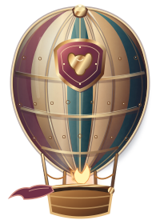

Tu barrio real, una noche mágica.
Una navegación nocturna cinematográfica sobre calles, fachadas y tejados fotorrealistas. Las luces y los destellos del Ratón Pérez te acompañan en el vuelo.
El mapa real necesita una clave de Google Maps JavaScript API. Si tu cuenta es elegible puedes solicitar una Demo Key sin tarjeta, solo para pruebas. Para producción, activa la facturación según las condiciones de Google y restringe la clave a este dominio y la API necesaria. La clave no se publica en GitHub.
✚Clínica de salidaOrigen de prueba · Puerta de AlcaláConfigurar
Se guarda en este navegador. Para una clínica real, el origen se configurará previamente; los padres solo introducirán su destino.
Para domicilios se necesitan Geocoding y Routes de Google habilitados. El vuelo terminará antes de llegar a la puerta.
Plan A nocturno · Fotogrametría auténtica, no extrusiones OSM. Google 3D proporciona fotografías diurnas: la noche, las luciérnagas y los destellos son una ambientación artística, no fotografías nocturnas de la ciudad. La cobertura varía según la zona.


¡El Ratón Pérez está muy cerca!
La cámara ha sobrevolado la ciudad a altura estable y ha rodeado el destino para enseñarte sus calles y edificios. Los últimos metros hasta casa serán un secreto.